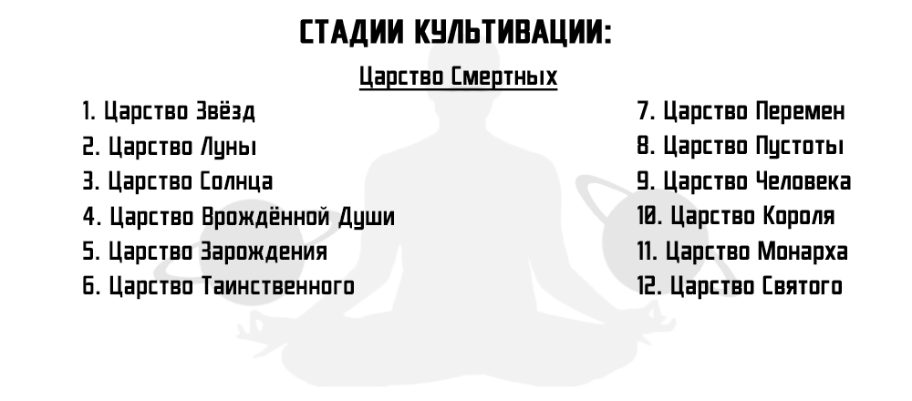
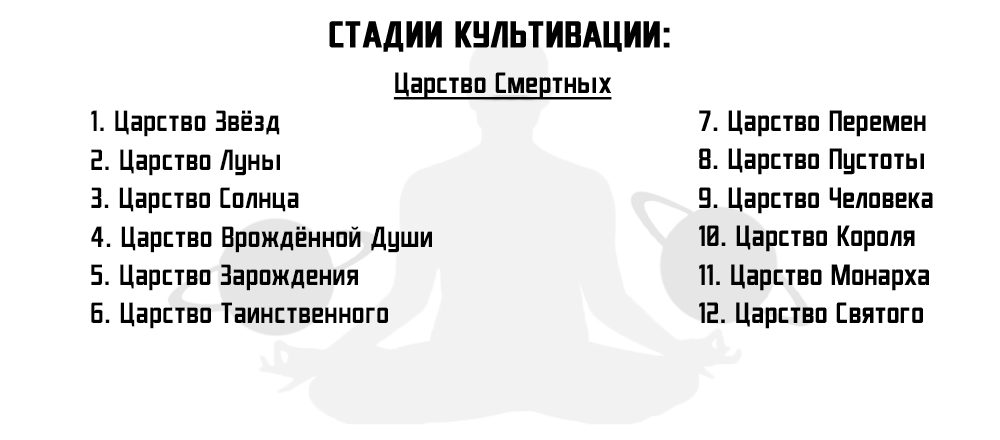
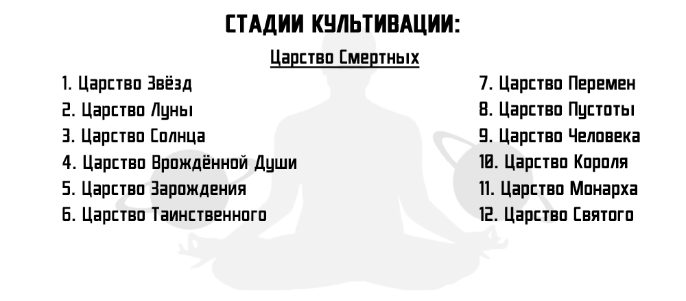
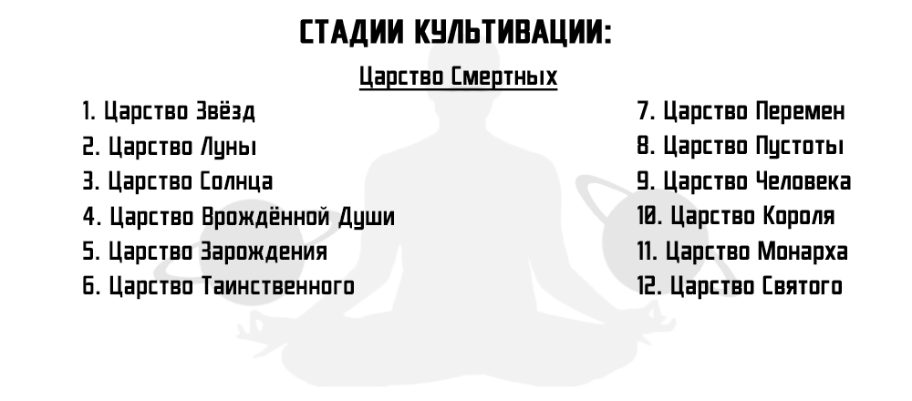
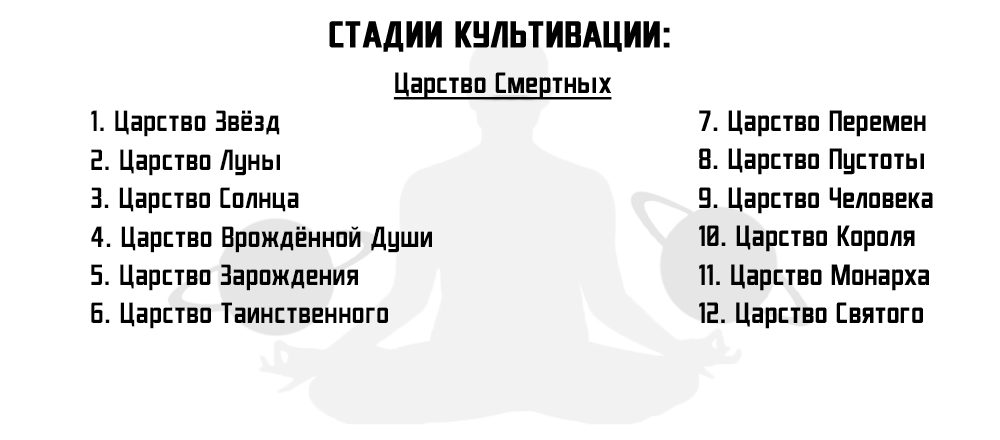

152 Глава
ОБНОВЛЕНИЯ
КАТАЛОГ ГЛАВ
Menu
156 - Дух Хаоса Вернулся
155 - Банкет
155 - Банкет
154 - Приглашение
153 - Неожиданная неприятность
152 - Притворщик
151 - Чжан Фэн Нянь
150 - Пора платить по счетам!
149 - Плод чистой крови
148 - Новые трудности
147 - Город Янь Луо
146 - Сообщение от неё
145 - Путь в Секту Небесного Меча
144 - Окончание Войны
143 - Императорский Гнев
142 - Истинный Предатель
141 - Декан Не Один!
140 - План Цин Яня
139 - Поглощение Видов
138 - Скрытый Мотив
137 - На Одного Меньше
136 - Марионетки
135 - План в действии
134 - Псы Ублюдка
133 - Действуем!
132 - Последний Враг Семьи
131 - Массив Высокого Уровня
130 - Море Сознания Предка
129 - Клюнул!
128 - Я вернулся!
127 - Ответный удар
126 - Предок
125 - Предатель
124 - Вместе!
123 - Помощник
122 - Новый Враг
121 - Неожиданная встреча
120 - Личная Месть
119 - Приговор
117 - Турнир Небесной Гордыни
116 - Отмщение
115 - Подонок
114 - Я пришёл!
113 - Раскрытие Тайны
112 - Пробуждение Огня
111 - Заговор Святых
110 - Первое место
109 - Божественное Оружие
108 - Невеста Ту Ту
107 - Си Суё
106 - Повышение Ранга
105 - Один Против Ста
104 - Трое Против Всех!
103 - Ядовитые Иглы
102 - Поединок Линь Сюэ
101 - Поединки
100 - Спасение Девушки
99 - Неуважение к Императору
98 - Снобисты
97 - Неприкасаемость
96 - Двойное очищение
95 - Финальный Этап
94 - Триумф
93 - Последствия
92 - Восстановление
91 - Убийство
90 - Поддразнивание
89 - Цзя Куи
88 - Крепость Ланг Я
87 - Возможность Прорваться
86 - Хуан Цин Фенг
85 - Форт Чистого Ветра
84 - Живая Карта
83 - Погребальное Ущелье
82 - Знакомое Место
81 - Задание
80 - Три Независимых Особняка
79 - Жизнь и Смерть
78 - Су Ту Ту
77 - Подходите все вместе!
76 - Пробуждение Ледяного Зверя
75 - Цена Угрозы
74 - Класс Гениев
73 - Урок Гения
72 - Высшая Медицина
71 - Гений
70 - Экзамен
69 - Академия Звёздного Неба
68 - Решимость
67 - Жетон Ассоциации Алхимиков
66 - Кончина Глупцов
65 - Ли Ран Чжу в Деле
64 - Озарение Глупцов
63 - Сражение с Глупцами
62 - Смерть Букашки и Очередной Глупец
61 - Магические Виды
60 - Сложности Букашкой
59 - Сражение с Букашкой
58 - Очередная Букашка
57 - Резня
56 - Гнев Императора
55 - Битва Старого Старика
54 - Яд Холода
53 - Несравненная битва
52 - Неожиданная Встреча
51 - Предчувствие
50 - Принц
49 - Подчинение Зверя
48 - Зверь-Пожиратель
47 - Встреча с Академией ТяньЮань
46 - Жертва Духовного Зверя
45 - Огонь Голубого Лотоса
44 - Скрытая Пещера
43 - Две Букашки
42 - Огненный Тигр
41 - Пилюли Высокого Уровня
40 - Восстановление Сюаня
39 - Безболезненная Смерть
38 - Пилюли Демона
37 - Фиолетовый Меч Грома
36 - День Дуэли
35 - Императорская Печать
34 - Древний Зверь Хаоса
33 - Неожиданный Гость
32 - След Духовного Зверя
31 - Сад Духовных Трав
30 - Окровавленная Семья
29 - Таинственный Меч
28 - Царапина
27 - Очистка Семьи
26 - Гнев
25 - Правда
24 - Воспоминания
23 - Предложение
22 - Поединок
21 - День Поединка
20 - Обязательства
19 - Очищение
18 - Прорыв
17 - Массив Сбора Духа
16 - Спасение
15 - Техники Небесного Ранга
14 - Таинственный Дух-Хранитель
13 - Павильон Гонгфа
12 - Месть за тебя
11 - Допрос
10 - Кровавая Рука Юнь Мэн
09 - Очередная Провокация
08 - Шрам предательства
07 - Алхимия
06 - Обещание
05 - Отбросы
04 - Беспокойство
03 - Секта Тянь Цзянь Цзун
02 - Появление Императора
01 - Возвращение Императора

Предыдущая глава
Главная страница
Следующая глава


 


